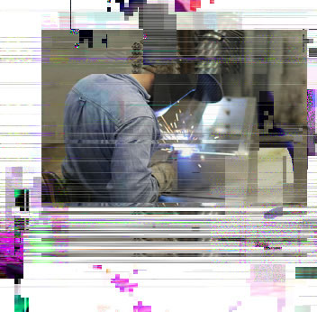
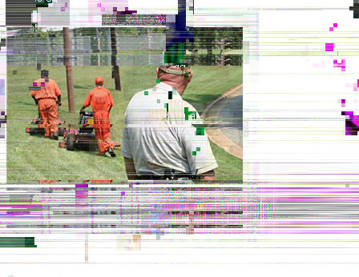
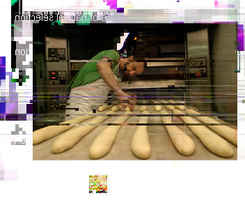
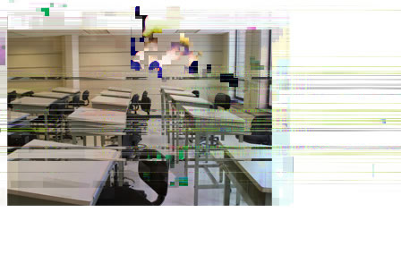

|
||
 |
 |
 |
 |
 |
 |
 |
|
||||||
|
||||||
Judson Ogram seeks to pro
maintaining dedication to the protection of citizens of the United States. Mindful o
service and victim reparation, we seek to instill in
law-abiding members of society, patriotic citizens and moral and upstanding members of this community and N
Judson Ogram seeks to provide federal offenders a safe, efficient, humane and appropriately secure correctional institution, while
maintaining dedication to the protection of citizens of the United States. Mindful of the Federal initiatives of re-entry, community
service and victim reparation, we seek to instill in offenders an improved sense of responsibility and the capacity to become
law-abiding members of society, patriotic citizens and moral and upstanding members of this community and Nation.
Indust
• Metal fabrication for institutional furnishing
• License pl
• Data e ntry
Industries
• Metal fabrication for institutional furnishing
• License plate manufacturing
• Data entry
Com
• Highway litter clean-up for Massachuse
Department of Transportation
• Carpe
children’s crec hes
• Reading books on tape for sch ools
Community Service
• Highway litter clean-up for Massachusetts
Department of Transportation
• Carpentry Workshop Project to provide furniture for
children’s creches
• Reading books on tape for schools
Vocational
• Administrative secretarial ser
• Office system technolo
• Food production/management services
• Baking
Vocational
• Administrative secretarial service
• Office system technology
• Food production/management services
• Baking
Academi
• Adult Ba
• GE D
• College progra
• Literacy pr
Academic
• Adult Basic Education
• GED
• College program
• Literacy program
24.16.2